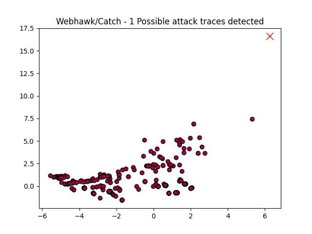

Webhawk Catch ReportUnsupervised learning Web logs/OS processes attack detection. Date: 18/06/25 at 21:12:11 GMTLog file: ./SAMPLE_DATA/RAW_APACHE_LOGS/access.log.2025-03-26 Log type: apache logs Findings: 1 |
 |
| Severity | Related CVE(s) | Line# | LLM Insights(llama3.2) | Log line |
| High | No CVE found | 2 | The log line appears to indicate a potential security incident, as it shows an unauthorized request to the web application's administrative interface (/%E5%AE%89%E5%85%A8%E7%9B%B8%E5%85%B3%E6%95%B0%E6%8D%AE%E6%A0%B7%E6%9C%AC%E9%9B%86). This could be a sign of an internal threat or a breach, especially given the request for administrative access. | 37.120.185.161 - - [26/Mar/2025:00:48:18 -0700] "GET /%E5%AE%89%E5%85%A8%E7%9B%B8%E5%85%B3%E6%95%B0%E6%8D%AE%E6%A0%B7%E6%9C%AC%E9%9B%86 HTTP/1.1" 404 291 "-" "Mozilla/5.0 (Windows NT 10.0# Win64# x64) AppleWebKit/537.36 (KHTML# like Gecko) Chrome/100.0.2237.328 Safari/537.36" |